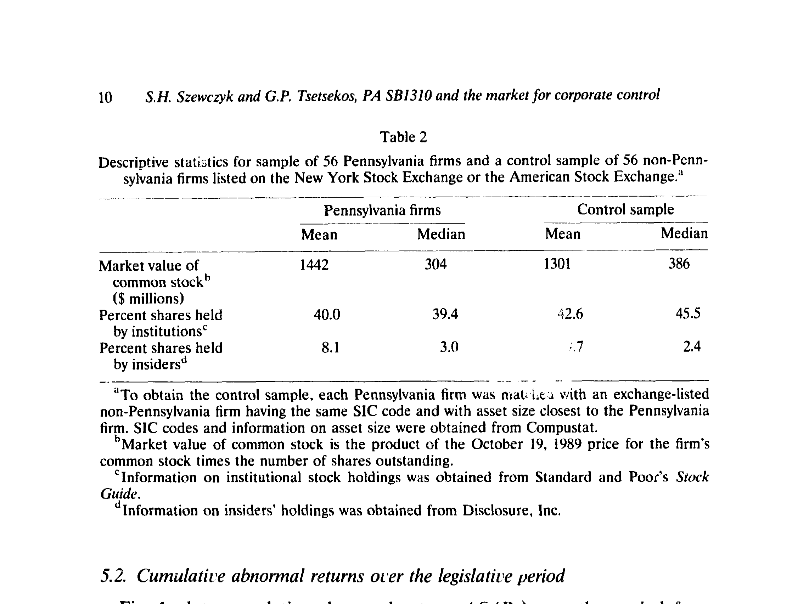
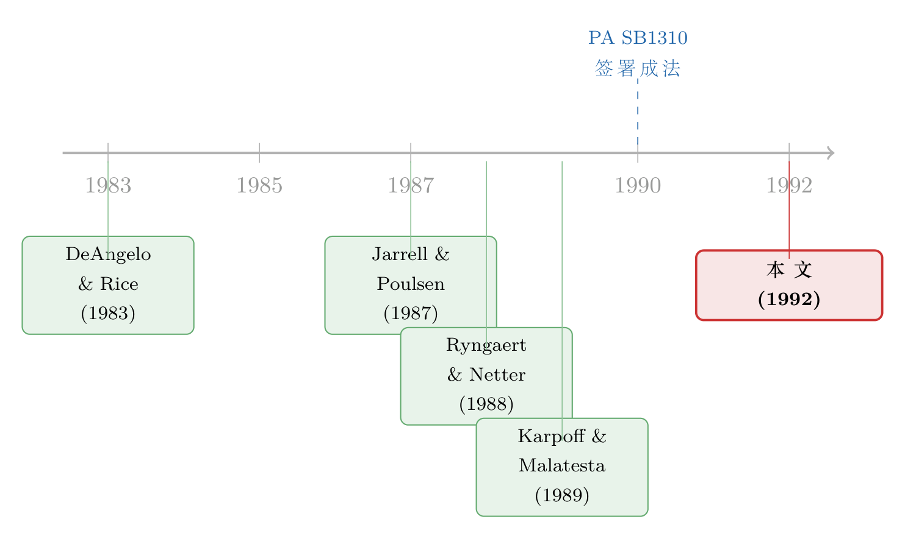

四十亿美元，是怎样被一部法律「立」没的
本文读的是 Szewczyk & Tsetsekos (1992, Journal of Financial Economics)：被称为「第二代反收购法里最狠一部」的宾夕法尼亚州参议院 1310 号法案（PA SB1310），在它走完立法程序的那半年里，让 56 家宾州上市公司的股价平均累计下跌了 9.09%（Z = -5.30），股东财富缩水保守估计 40 亿美元；而那些早已设好反收购章程的公司受伤更轻，主动「豁免」掉全部条款的公司还把一部分钱挣了回来。
1 引言：一部法律，能值多少钱？
我们习惯于这样想象资本市场：一家公司值多少钱，取决于它的现金流、它的护城河、它的管理层有多能干。可如果有一天，一纸地方法律——不改变任何一台机器、不动一分钱的现金流——就能让一群公司在半年里集体蒸发掉 40 亿美元的市值，你会作何感想？
这正是 1990 年发生在宾夕法尼亚州的事。
故事的导火索很具体。1989 年，加拿大的 Belzberg 家族对 Armstrong World Industries（一家地板与瓷砖巨头，也是宾州兰开斯特县最大的雇主）发起了敌意收购。地方政商两界的反应不是去市场上应战，而是去州议会立法。于是有了 宾夕法尼亚州参议院 1310 号法案 (Pennsylvania Senate Bill 1310, PA SB1310)——1989 年 10 月 20 日提交参议院，1990 年 4 月 27 日由 Casey 州长签署成法。
它狠在哪？批评者给它起了个外号叫「肥猫保护与股东宰割法案」。证券交易委员会主席、四十二位商法教授、《华尔街日报》《费城问询报》的社论作者，乃至宾州自己的公共养老金，都站出来反对。表面上它有五条主要条款（见下文的制度拆解），但真正引发地震的是三条「反收购」核心条款，尤其是其中最具争议的一条——它免除了董事会「以股东利益为首要责任」的传统受托义务 (fiduciary duty)。换句话说，这部法律在法理上松开了「董事必须为股东最大化财富」这根绳。
那么，一个自然的问题是：市场会怎样给这件事定价？ 如果反收购法真像支持者说的那样能逼出更高的收购溢价、保护长期投资，股价应该上涨；如果它真像批评者说的那样是在给无能的管理层筑墙、把股东「投票权」掏空，股价就该下跌。这恰恰是一个可以用数据回答的问题。本文做的，就是把这部法律的「价格」算出来。
2 识别策略：把「立法」当成一连串事件来读
要给一部法律定价，方法论上的难点是：法律不是某一天「突然」出现的，它是在半年的拉锯里一点点成形的。市场也就一点点地把信息吸收进价格。作者的处理办法，是把这件事拆成三套互相印证的 事件研究 (event study)。
首先，是覆盖整个立法过程的长窗口。作者累计了从 1989 年 10 月 20 日（法案提交）到 1990 年 4 月 27 日（签署成法）整整 131 个交易日的 累计异常收益 (cumulative abnormal returns, CARs)。异常收益的算法是标准的市场模型：
$$ AR_{it} = R_{it} - (\hat{a}_i + b_i R_{mt}) $$
这里 \(R_{it}\) 是股票 \(i\) 在第 \(t\) 天的实际收益，\(\hat{a}_i\) 与 \(b_i\) 是用 1989 年 10 月 20 日往前推 200 个交易日里、连续 140 个交易日 OLS 估出来的市场模型参数，\(R_{mt}\) 用标普 500 指数衡量市场收益。检验统计量 Z 基于标准化后的异常收益，两个样本之间差异的显著性则沿用 Travlos (1987) 的做法。
接着，一个自然的问题是：长窗口里会不会混进别的事件，污染了估计？所以作者又做了第二套——围绕四个关键节点的短窗口。这四个节点是：1989 年 10 月 20 日提交参议院、1989 年 12 月 13 日参议院通过、1990 年 4 月 3 日众议院通过、1990 年 4 月 27 日州长签署。每个节点取「事件前一天到事件后一天」的三天窗口，再把四个节点叠成一个 12 天的累计窗口。短窗口会漏掉立法过程中其他时点释放的信息，但好处是更不容易被无关事件带偏。
然后，是最巧妙的一步——一组「安慰剂」式的对照样本。作者给每一家宾州公司，都从 Compustat 里匹配了一家同 SIC 行业代码、资产规模最接近的非宾州公司，凑成 56 家的控制样本。逻辑很干净：如果股价下跌是行业性的、宏观性的，那控制样本应该一起跌；只有当宾州样本独自下跌、控制样本纹丝不动时，我们才能把这笔损失归到「宾州这部法律」头上。
这套「同行业、同规模、跨州界」的匹配，本质上是在用地理边界做识别——同样在制度边界上做文章的思路，也出现在后来很多研究里（关于「换一部法律会不会改变公司价值」，可参见《租来的法律，凭什么让公司更值钱？》）。
3 制度拆解：被掏空的，是「投票」这件事
在看结果之前，值得花点笔墨讲清楚这部法律到底动了什么。它的五条主要条款里，前三条是冲着收购方去的，后两条（员工遣散补偿、劳动合同延续）是给员工的。
第一条是 控制股份 (control shares) 条款：任何「控制集团」一旦收购或成功征集到至少 20% 流通股的投票权，这部分股份的投票权就被冻结，只有在「无利害关系」股东多数同意下才能恢复。这意味着，任何争夺控制权的代理投票，实际上要经过两轮：第一轮先投票决定「要不要允许这场争夺」，而收购方及其盟友在这一轮里不能投票。结果是，哪怕一场收购得到了多数流通股的支持，管理层也更容易把它拦下。
第二条是 利润吐出 (disgorgement) 条款，这是全美第一部强制收购方把卖股利润上缴目标公司的法律：任何披露了控制意图的外部股东，若在 18 个月内卖出股份，所得利润必须上缴。支持者说这是反「绿票讹诈 (greenmail)」；批评者说这近乎「州政府背书的财产征用」，甚至可能因干涉州际商业而违宪。
第三条，也是争议最大的一条，就是前面提到的重新定义董事的受托义务：董事不再被要求把任何特定群体（包括股东）的利益当作首要考量。由于这是对 1983 年一部老法的修正，它不只适用于收购场景，而是适用于宾州董事做出的所有决策。一位斯坦福法学教授 Gilson 一针见血：这部法律塑造的，是一个「自我延续、对任何人都不必为其行使他人财产权力负责」的治理机构。
注意这部法律给公司留了一扇后门：在法案生效后的头 90 天内，公司可以自行选择豁免 (opt out) 三条反收购条款中的任何一条。这扇后门，后来成了整个故事最精彩的反转——它把「股东到底想不想要这部法律」变成了一个可观测的选择。
4 主要结果：40 亿美元的滑坡
先看最直观的一张图。把宾州样本与控制样本的累计异常收益画在同一张图上，对照得触目惊心：控制样本的 CAR 像随机游走一样在零附近徘徊，而宾州样本则在整个立法期里一路下行，到法案签署时已累计下跌约 9%。这条单调下行的曲线本身就在讲一个故事——信息不是在某一天集中释放的，而是随着立法辩论的推进、法案一点点成形，被持续地「喂」进了价格。

Figure 1: plots cumulative abnormal returns (CARS) over the period from
把这条曲线翻译成数字：在整个立法期里，宾州样本录得平均异常收益 -9.09%，在 0.01 水平上显著（Z = -5.30）；同期控制样本只有 -0.412%，并不显著（Z = -1.62）；两个样本标准化异常收益之差也是显著的（Z_dif = 2.60）。作为对照，在立法前 60 个交易日的安慰剂期里，两个样本都没有显著的异常收益，差异也不显著（Z_dif = 0.37）——这正是我们想看到的「平行趋势」证据。
把百分比换算成美元，作者用每家公司 1989 年 10 月 19 日的市值乘以它的异常收益，加总得到 40.15 亿美元 的异常损失（占这些公司当时市值的 4.97%）。由于样本只含 NYSE/AMEX 上市公司，这还是个保守估计。对比之下，Karpoff & Malatesta (1989) 估计 1988 年以前 26 个州的 40 部反收购法总共才造成 60 亿美元损失——单单一部 PA SB1310，就抵得上前面那一大堆法律的三分之二。这部法律的「破坏力」是空前的。
短窗口的结果同样指向一致的方向：四个关键事件里有三个录得显著为负的平均异常收益，控制样本则无显著反应；四个事件叠加的累计效应为 AAR = -3.330%（Z = -4.80），与控制样本的差异显著（Z_dif = 2.16）。其中 1989 年 12 月 13 日那个窗口反应尤其大——因为前一天（12 日）参议院刚以 41 比 6 的悬殊票数否决了一项「重申董事对股东受托责任」的修正案。市场用脚投票，告诉你它最在乎的就是那条受托义务。
但真正关键的一步在于横截面的对比。 如果这笔损失真的来自「反收购保护」，那么早就给自己上了锁的公司，应该对这部法律「免疫」。作者从 DeAngelo & Rice (1983)、Jarrell & Poulsen (1987) 的名单以及《华尔街日报》索引里，识别出 12 家在 1989 年 10 月 20 日前就已通过反收购章程修正案的公司。结果正如预期：这些公司在关键事件上的累计效应只有 -1.109%，不显著（Z = -0.65）；而没有章程保护的公司是 -3.935%（Z = -5.06），两者之差在 0.10 水平上显著（Z_dif = 1.77）。换句话说，已经有「私人」反收购保护的公司，对这部「公共」反收购法的反应明显更小——这从反方向坐实了：市场下跌的根源就是反收购效应本身。
（有意思的是，作者还检验了那 7 家「正在被收购」的公司，却没有发现它们的反应与其他公司有显著差异，Z_dif = 0.27。这一点稍后会再提。）
5 反转：当公司争先恐后地「拒绝」被保护
到这里，故事本该收尾——一部坏法律，让股东亏了 40 亿。可最精彩的部分还在后面，而钥匙就是前面提到的那扇 90 天「豁免」后门。
如果这部法律真是「保护」股东的，公司理应欣然接受。可现实是：56 家公司里，至少有 35 家 选择豁免掉一条或多条反收购条款。这本身就是一场宾州最大、最显赫的公司对这部法律的「集体否决」。
更妙的是市场对这些「豁免公告」的反应。作者发现，只有那些豁免掉全部三条条款的公司，才录得显著为正的异常收益（AAR = 0.650%，Z = 3.02），且与控制样本差异显著（Z_dif = 2.35）。而仅豁免两条的公司没有这种反应——两者之差在 0.10 水平上显著（Z_dif = 1.87）。
为什么是「全部三条」这个临界点？因为只有豁免全部三条的公司，才同时拒绝了那条受托义务条款。这就把因果链条收得很紧：市场之所以对「全豁免」鼓掌，主要是因为它重新恢复了董事对股东的受托责任。绕了一大圈，故事又回到了那条最核心的线索上——董事到底要不要对股东负责，这件事是有价格的，而且价格不菲。
那么是哪些公司更愿意豁免？作者顺势查了股权结构（见 Table 6）：豁免公司的机构持股比例平均 45%，显著高于不豁免公司的 38%（t = 3.56）；而内部人持股比例两组没有显著差异（t = 0.42）。这与一个直觉吻合：机构投资者作为大额持股人，更愿意、也更有能力在公司治理上较真，所以他们持股越多的公司，越倾向于把自己从反收购条款里摘出来。事实上，加州公务员退休系统（CalPERS）当时就点名要求宾州 22 家最大的公司豁免——机构投资者正在从「用脚投票」走向「用手投票」。
一个耐人寻味的脚注：作者坦言，「豁免带来的收益（0.65%）相对立法期的损失（9.09%）小得惊人」。可能的解释有几个：投资者也许觉得宾州议会将来照样会出手相救任何遇袭的本州公司，哪怕它豁免了；控制股份与吐出条款对样本里大多数公司本就没有即时关联（25 家全豁免公司里只有 3 家是收购目标）；以及豁免决定可能早被市场预期到了。这恰恰说明，「立没」容易，「立回来」难——法律一旦改变了博弈格局，单靠个体退出很难完全复原。
6 文献脉络：一桩「证据混杂」的悬案
把这篇论文放回它的时代，才能看清它的分量。
在 PA SB1310 之前，学界对州反收购法到底伤不伤股东，结论是高度混杂的。一边，是大量「无显著影响」的证据：Margotta, McWilliams & McWilliams (1990) 研究俄亥俄 1986 年的法律，发现财富效应不显著；Margotta & Badrinath (1987) 对新泽西 1986 年法律的结论也是不显著；Jahera & Pugh (1990) 找不到特拉华 1988 年法律伤害股东的证据；Pugh & Jahera (1990) 检验了俄亥俄、印第安纳、新泽西、纽约的六部法案，无论单看还是合看，都没有一致的负面效应。
另一边，是「确有伤害」的证据：Ryngaert & Netter (1988, 1990) 发现俄亥俄反收购法压低了股价；Schumann (1989) 在纽约 1985 年法律里发现了负的估值效应。而最有分量的一锤来自 Karpoff & Malatesta (1989)——他们检验了 26 个州的 40 部法律，发现了虽小但显著的负面股价效应，并估出 60 亿美元的总损失。

证据为什么这么乱？作者点出了原因：方法不同、样本构成不同、法律类型也不同。而 PA SB1310 恰好提供了一个近乎「实验室」的样本——它是公认最严厉的一部第二代法律，影响足够大，信号足够强，又有一个干净的同行业控制样本，还附带一扇「豁免后门」让你能从反方向验证。于是这篇论文成了这场悬案里一份格外清晰的证词：当法律足够极端时，反收购效应对股东财富的伤害是清晰、巨大、且可归因的。Karpoff & Malatesta (1990) 后续也独立报告，1989 年 10 月 12 日至 1990 年 1 月 2 日间，宾州公司跑输标普 500 达 5.8%，与本文相互印证。
7 评论与延伸（Q&A + 研究方向）
(a) 几个可能的疑问
Q：长达 131 天的事件窗口，怎么保证那 9.09% 不是别的因素造成的？
这正是作者要用「同行业、同规模、跨州界」控制样本的原因。立法前 60 天的安慰剂期里两组都无显著异常收益、且差异不显著（Z_dif = 0.37），这给了一个「平行趋势」的证据；立法期里只有宾州样本独自下跌（-9.09% vs 控制样本 -0.412%）。再加上四个关键事件的短窗口结果方向一致，长窗口的结论就不太可能是某个孤立的污染事件造成的。
Q：会不会是宾州经济本身在那半年里变差了，而不是这部法律？
控制样本恰恰排除了这种解释——如果是宏观或行业冲击，匹配的非宾州同行也会跌。更有力的是横截面证据：已有反收购章程的宾州公司几乎没受影响（-1.109%，不显著），而无保护的公司跌了 3.935%。「保护程度」与「跌幅」的这种负相关，宏观故事解释不了，只有「反收购效应」能解释。
Q：既然法律这么伤股东，为什么宾州的政商两界、工会还一致支持它？
因为股东不是唯一的利益相关方。法律的后两条明确保护员工遣散与劳动合同，这解释了 AFL-CIO 和钢铁工人工会的支持。而管理层的「壕沟」动机更直接——批评者认为这部法律的真实功能是让无能管理层免于问责。股价的下跌，正是市场对「管理层壕沟 (managerial entrenchment)」这一面的定价。
Q：为什么「正在被收购」的 7 家公司反应反而不显著？
这是个反直觉之处。按理说反收购保护对收购目标最「即时相关」，反应该最强。作者没找到显著差异（Z_dif = 0.27）。一个可能是样本太小（只有 7 家），统计功效不足；另一个可能是这些公司的收购消息早已反映在价格里，法律的边际冲击被稀释了。这是本文一个诚实但未完全解决的地方。
Q：豁免带来的 0.65% 收益，比 9.09% 的损失小得多，这说明法律「无所谓」吗？
恰恰相反，它说明制度变迁有黏性。市场也许预期议会将来仍会保护本州公司（哪怕它豁免了）；豁免决定可能早被预期；且控制股份/吐出条款对多数公司本无即时关联。单个公司退出，无法消除「整个州的博弈格局已被改写」这一系统性影响。
Q：这部法律削弱了股东的代理投票权，那它对「通过代理权之争换掉管理层」这条治理渠道意味着什么？
意味着这条渠道被实质性地堵上了——控制股份条款让任何代理争夺要过两轮投票，且收购方第一轮不能投票。这正是争议的核心。代理权之争作为治理机制本就脆弱，相关证据可参见《一场被「外人」点燃的股东起义》。
(b) 几个可能的研究问题与提案
1. 反收购法的「债权人」视角：股东亏了 40 亿，债主呢？
【经济故事】反收购法降低了被收购概率，对股东是坏消息（少了收购溢价、多了壕沟），但对债权人未必——更稳定的控制权、更少的杠杆收购威胁，可能降低违约风险、压低信用利差。股债之间的这种符号分歧，是公司金融里反复出现的张力。 【可行性】中。需要 PA SB1310 样本公司的债券价格/利差数据（如 TRACE 之前可用 Lehman/Datastream 债券数据，但 1990 年覆盖较薄），识别上可沿用本文同样的事件窗口与控制样本。难点在于 1990 年公司债的高频价格稀疏。这一思路在治理与债券定价的交叉处已有先例，见《股东说了算，债主就要遭殃吗？》。
2. 机构持股的「因果」而非「相关」：是机构推动了豁免，还是豁免吸引了机构？
【经济故事】本文发现豁免公司机构持股更高（45% vs 38%），但这是横截面相关。CalPERS 等点名施压的自然实验，提供了识别「机构压力 → 豁免」因果的可能。 【可行性】中高。可手工整理 1990 年哪些公司被机构公开点名、点名时点，构造一个「被点名」的处理组，做豁免概率的 DiD 或事件研究。数据可从当时报纸（《费城问询报》等）与 13F 持仓重建。识别干净，但样本仅 56 家，功效受限。
3. 「最严厉法律」的长期实体后果：宾州公司后来真的更难融资、投资更差了吗？
【经济故事】批评者预言这部法律会让宾州公司难以募集股权资本、滋生低效管理。短期股价已给出市场预期，但长期的实体后果（投资、雇佣、R&D、再融资）是另一回事。 【可行性】高。Compustat 提供宾州 vs 匹配非宾州公司 1990 年后十年的投资、雇佣、发行数据，可做长期 DiD。可与「上市公司因法律保护而变化」的实证传统对话，例如《上市之后，公司为什么开始疯狂招人？》的反面问题——保护增强后，雇佣与投资如何演变。
4. 外资持有人对「壕沟型」治理的敏感度。
【经济故事】外国机构投资者通常对弱治理、弱股东权利更敏感（撤资门槛更低）。PA SB1310 这种极端削弱股东权的法律，是否触发了外资的差异化抛售？ 【可行性】中低。1990 年个股层面的外资持股数据极难获得（彼时披露稀疏），这是主要瓶颈；若退而用「跨州」或更晚近的类似法律（配合更好的持股数据）做替代，则可行性上升。关于外资是否「更挑剔」，可对照《外资真是「蝗虫」吗？》。
我的判断
这篇论文的贡献不在方法的新颖——它用的是当年已经成熟的事件研究工具——而在于它抓到了一个近乎完美的识别场景：一部影响足够极端、信号足够强的法律，配上干净的同行业控制样本，再加上一扇能从反方向验证的「豁免后门」。在一桩「证据混杂」的文献悬案里，它提供了一份格外有说服力的证词，把「反收购法伤害股东」这件事，从一堆相互矛盾的小系数里，钉成了一个 40 亿美元的、可归因的大数字。尤其漂亮的是「全豁免 → 恢复受托义务 → 正收益」这条链，它把抽象的「受托责任」直接翻译成了可观测的价格。
对识别的担忧主要有三点。其一，样本太小（56 家，子样本更小），「正在被收购」组的零结果很可能只是功效不足，不宜过度解读。其二，长窗口的归因始终是事件研究的软肋——131 天里要完全排除其他公司层面消息的污染并不容易，作者用短窗口来缓解，但短窗口本身又会漏掉信息，两者是一种取舍。其三，机构持股与豁免的因果方向未被识别，本文只能给出相关性。
后续我最想看到的，是这部「最严厉法律」的长期实体后果：三十多年过去，宾州公司在投资、雇佣、再融资和被收购概率上，是否真的如批评者所预言的那样系统性地落后于匹配的非宾州同行？短期股价已经替市场写下了预期，但预期是否兑现，需要长周期的数据来对账。那将是对「市场对公司控制权 (market for corporate control)」这条研究主线最有力的一次回访。
参考文献
- Szewczyk, S. H., & Tsetsekos, G. P. (1992). State intervention in the market for corporate control: The case of Pennsylvania Senate Bill 1310. Journal of Financial Economics 31(1), 3–23.
- DeAngelo, H., & Rice, E. M. (1983). Antitakeover charter amendments and stockholder wealth. Journal of Financial Economics 11, 329–359.
- Jarrell, G. A., & Poulsen, A. B. (1987). Shark repellents and stock prices: The effects of antitakeover amendments since 1980. Journal of Financial Economics 19, 127–168.
- Karpoff, J. M., & Malatesta, P. H. (1989). The wealth effects of second-generation state takeover legislation. Journal of Financial Economics 25, 291–322.
- Ryngaert, M., & Netter, J. M. (1988). Shareholder wealth effects of the Ohio antitakeover law. Journal of Law, Economics, & Organization 4, 373–383.
- Schumann, L. (1989). State regulation of takeovers and shareholder wealth: The case of New York's 1985 takeover statutes. RAND Journal of Economics.
- Travlos, N. G. (1987). Corporate takeover bids, methods of payment, and bidding firms' stock returns. Journal of Finance 42, 943–963.